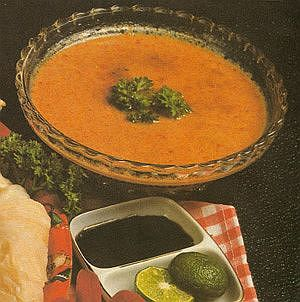

Sambal Kacang

Bahan-bahan :
- kacang tanah 200 gram, sangrai
- cabe rawit 6 buah
- cabe merah 2 buah
- gula merah 2 sendok makan
- air panas 200 ml
- kecap manis 6 sendok teh
- garam secukupnya
Cara Membuat :
- Haluskan kacang tanah, cabe rawit, cabe merah, dan gula merah. Sisihkan.
- Masukkan air panas dan kecap manis, aduk rata.